청소년상담사-2급(1교시) (2021-10-09 기출문제)
1과목: 청소년 상담의 이론과 실제
1. 지역사회 기반 청소년상담의 특성으로 옳은 것을 모두 고른 것은?
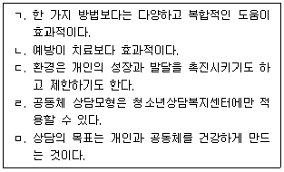
- ㄱ, ㄴ, ㅁ
- ㄴ, ㄷ, ㄹ
- ㄷ, ㄹ, ㅁ
- ㄱ, ㄴ, ㄷ, ㅁ
- ㄱ, ㄴ, ㄷ, ㄹ, ㅁ
(정답률: 알수없음)

2. 인터넷게임에 과몰입된 청소년 A는 게임하지 말라고 잔소리하는 부모님과 다투고, 밤늦도록 게임을 하느라 학교 지각이 잦아졌다. 이러한 현상을 무엇이라고 하는가?
- 금단현상
- 내성
- 일상생활의 장애
- 현실과 가상 세계의 혼란
- 신체적 증상
(정답률: 알수없음)
3. 아동의 부적응 행동을 변화시키기 위해 사용하는 타임아웃에 관한 설명으로 옳지 않은 것은?
- 처벌 중 하나이다.
- 타임아웃을 끝냈을 때 규칙 준수를 칭찬한다.
- 타임아웃 할 장소를 미리 알려줄 필요는 없다.
- 어떤 행동을 했을 때 타임아웃을 하는지 사전에 명확히 알려준다.
- 문제행동을 중단하지 않으면 타임아웃이 임박했음을 경고한다.
(정답률: 알수없음)
4. 체계적 둔감화 기법에서 불안과 공포를 통제하는 기제는?
- 부적 강화
- 상호 억제
- 모델링
- 부분 강화
- 조성
(정답률: 알수없음)
5. 개인심리학적 입장의 상담자가 관심을 갖는 개념으로 옳은 것을 모두 고른 것은?
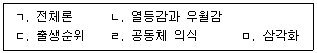
- ㄹ, ㅁ
- ㄱ, ㄴ, ㄷ
- ㄴ, ㄹ, ㅁ
- ㄱ, ㄴ, ㄷ, ㄹ
- ㄱ, ㄴ, ㄷ, ㄹ, ㅁ
(정답률: 알수없음)
6. 인간중심 상담에서 위기 상황 시 우선 할 수 있는 개입은?
- 즉각적으로 문제해결 개입을 한다.
- 위기 수준에 상관없이 지시를 한다.
- 행동과 태도의 부조화를 다룬다.
- 고통을 충분히 표현할 수 있도록 경청한다.
- 신속하고 정확한 심리평가를 한다.
(정답률: 알수없음)
7. 다음은 게슈탈트 상담의 주요 개념에 관한 내용이다. ( )에 들어갈 용어로 옳은 것은?
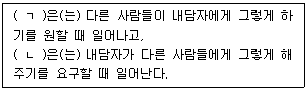
- (ㄱ) 내사 (ㄴ) 투사
- (ㄱ) 투사 (ㄴ) 내사
- (ㄱ) 융합 (ㄴ) 탈감각
- (ㄱ) 탈감각 (ㄴ) 융합
- (ㄱ) 융합 (ㄴ) 저항
(정답률: 알수없음)
8. 내담자가 상담에서 자신의 신경증적 문제를 드러낸다고 가정하는 상담이론은?
- 정신분석
- 인간중심
- 행동주의
- 인지행동
- 현실치료
(정답률: 알수없음)
9. '명문 대학에 가지 못하면 난 실패한 것이다.' 라는 사고는 어떤 인지적 왜곡에 해당하는가?
- 당위적 사고
- 선택적 추상화
- 개인화
- 이분법적 사고
- 과잉일반화
(정답률: 알수없음)
10. 여자청소년 내담자 P는 “저는 예쁘지 않아서 결혼하기 힘들고 결혼하지 못하면 여성으로서 가치가 없어요.”라고 말하면서 의기소침하고, 무력한 모습을 보인다. 이 호소에 대한 여성주의 상담자의 역할로 옳지 않은 것은?
- 자신의 생활에 미치는 사회적 요인을 평가하도록 돕는다.
- 사회적 신념이 자신에게 어떻게 부정적으로 영향을 주는지 이해하도록 돕는다.
- 결혼하지 않고 살 수 있도록 돕는다.
- 내면화된 여성 역할 메시지를 확인하도록 돕는다.
- 개인적 능력감과 사회적 능력감을 기르도록 돕는다.
(정답률: 알수없음)
11. 행동분석 A-B-C에서 A가 의미하는 것은?
- 태도(Attitude)
- 활성화 사건(Activating event)
- 감정(Affection)
- 통각(Apperception)
- 선행사건(Antecedent)
(정답률: 알수없음)
12. 다음이 설명하는 내용은 어떤 이론에 관한 것인가?
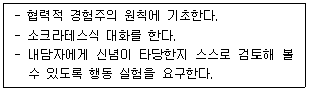
- 인지치료
- 합리적 정서행동치료
- 행동치료
- 현실치료
- 경험치료
(정답률: 알수없음)
13. 해결중심 상담에서 “어떻게 지난 주 보다 더 나빠지지 않았나요?” 는 무슨 질문에 해당하는가?
- 예외
- 대처
- 기적
- 척도
- 관계
(정답률: 알수없음)
14. 청소년상담에 관한 설명으로 옳지 않은 것은?
- 청소년의 바람직한 발달을 추구하는 활동이다.
- 발달단계를 고려하여 프로그램을 개발하고 실행한다.
- 성인을 대상으로 하는 상담적 접근을 그대로 적용한다.
- 청소년의 잠재가능성을 발현할 수 있도록 조력하는 전문적 활동이다.
- 대표적인 지역사회 기반의 청소년상담 기관으로 청소년상담복지센터가 있다.
(정답률: 알수없음)
15. 청소년상담자에게 요구되는 자질로 옳지 않은 것은?
- 윤리규정 숙지
- 상담이론에 대한 이해
- 문화적 차이에 대한 이해
- 자신의 태도와 가치관에 대한 이해
- 내담자의 결정을 이끄는 구원자 역할
(정답률: 알수없음)
16. 청소년상담자의 태도로 옳지 않은 것은?
- 공감적 이해
- 즉각적인 직면
- 솔직하고 따뜻한 태도
- 언어적 행동과 비언어적 행동의 일치
- 내담자 자체의 가치를 순수하고 깊게 수용
(정답률: 알수없음)
17. 청소년상담사 윤리강령에 관한 설명으로 옳은 것은?
- 청소년상담사는 「청소년보호법」에 따라 청소년의 권리와 책임을 다 할 수 있게 지원해야 한다.
- 청소년상담사는 어떠한 경우라도 현행법을 윤리강령보다 우선적으로 준수해야 한다.
- 내담자에게 상담을 거부하거나 개입방식의 변경을 거부할 권리를 보장해 주어야 한다.
- 5년 이상의 청소년상담사는 법적으로 정해진 보수교육을 받지 않아도 된다.
- 사이버상담의 특성상, 한 명의 내담자가 여러 명의 사이버상담자를 만나게 되는 경우 상담자들 간에 정보를 공유할 수 있음을 알려서는 안 된다.
(정답률: 알수없음)
18. 다음 상담자의 언어반응은 어떤 상담기술에 해당하는가?
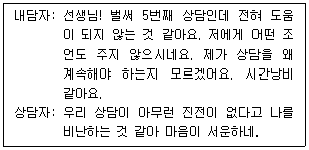
- 해석
- 즉시성
- 직면
- 정보제공
- 요약
(정답률: 알수없음)
19. 청소년상담의 과정에 관한 설명으로 옳지 않은 것은?
- 상담중기에 내담자의 자기탐색과 상담개입에 대한 저항 등을 다룬다.
- 상담자가 잘 알고 있고 이전에 사용했던 경험이 있으며 내담자에게 효과적으로 적용할 수 있는 상담개입전략을 사용한다.
- 특정 개입전략을 사용하기에 전문성이 부족해도 상담자의 이미지를 훼손하지 않기 위해 임의로 사용한다.
- 새로운 개입전략의 기법과 기술을 사용하기 위해서는 수퍼바이저의 조언을 구하는 것이 필요하다.
- 상담자가 선호하는 이론에 내담자를 맞추지 않도록 노력한다.
(정답률: 알수없음)
20. 청소년 매체상담에 관한 설명으로 옳지 않은 것은?
- 긴급전화, 상담전화, 정보제공 등의 기능을 수행하는 청소년상담 전용전화는 1366이다.
- 전화상담의 특징은 익명성과 편의성 보장이다.
- 전화상담은 긴급한 위기상황에서 도움을 요청하는 수단이 될 수 있다.
- 스마트폰 및 인터넷 환경의 발달로 채팅상담과 화상상담 등이 활발해졌다.
- 사이버상담 시 위기개입 등의 상황에 대비하기 위해 내담자의 신분을 확인할 방법이 있어야 한다.
(정답률: 알수없음)
21. 다음 내담자의 말에 이어지는 상담자의 반응 중 유형이 다른 하나는?
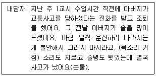
- 아버지한테 화가 난 것처럼 보여요.
- 사고 소식을 듣고 정말 많이 놀랐겠네요.
- 아버지한테 안 좋은 일이 일어나서 슬퍼하는 것 같아요.
- 저도 저의 아버지가 술을 드실 때마다 걱정되고 화가 났었어요.
- 아버지를 걱정하는 마음을 알아주지 않아서 섭섭했을 것 같아요.
(정답률: 알수없음)
22. 청소년상담의 실제에 관한 설명으로 옳은 것은?
- 상담비용은 내담자의 재정 상태 등을 고려하여 합리적으로 책정한다.
- 내담자가 만 14세 미만의 청소년인 경우, 보호자 또는 법정대리인의 상담활동에 대한 사전동의가 필요하지 않다.
- 사이버상담이 청소년 내담자에게 부적절하다고 간주되는 경우라도 내담자가 원하면 진행해야 한다.
- 상담을 시작한 청소년 내담자가 다른 정신건강전문가에게 상담을 받고 있음을 알았을 때, 즉시 상담을 종료한다.
- 청소년상담사 윤리강령에는 내담자가 상담계획에 참여할 권리 보장에 대해 언급하고 있지 않다.
(정답률: 알수없음)
23. 상담의 종결 시 다루어야 할 내용으로 옳은 것을 모두 고른 것은?
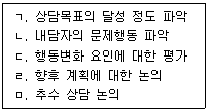
- ㄱ, ㄴ
- ㄴ, ㄹ
- ㄷ, ㅁ
- ㄱ, ㄷ, ㄹ, ㅁ
- ㄱ, ㄴ, ㄷ, ㄹ, ㅁ
(정답률: 알수없음)
24. CYS-Net(community youth safety-net)에 관한 설명으로 옳지 않은 것은?
- 위기청소년을 지원하기 위해 참여하는 자발적인 지역주민들의 모임이 있다.
- 청소년에게 지역사회를 기반으로 통합서비스를 제공하기 위한 시스템이다.
- '위기청소년 발견', '개입', '통합서비스 제공'의 세 가지 체계의 운영모듈이 있다.
- 개입체계는 긴급구조, 일시보호, 진단, 상담개입을 위한 것이다.
- 이 체계는 「청소년보호법」제4장에 규정되어 있다.
(정답률: 알수없음)
25. 위기대응을 위한 지역사회 공동체의 사전 준비로 옳은 것을 모두 고른 것은?
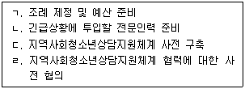
- ㄱ, ㄴ
- ㄴ, ㄷ
- ㄷ, ㄹ
- ㄴ, ㄷ, ㄹ
- ㄱ, ㄴ, ㄷ, ㄹ
(정답률: 알수없음)
2과목: 상담연구방법론의 기초
26. 다음 ( )에 들어갈 내용으로 옳게 짝지어진 것은?
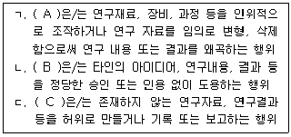
- A: 표절, B: 위조, C: 변조
- A: 위조, B: 표절, C: 변조
- A: 위조, B: 변조, C: 표절
- A: 변조, B: 표절, C: 위조
- A: 변조, B: 위조, C: 표절
(정답률: 알수없음)
27. 판별분석에 관한 설명으로 옳지 않는 것은?
- 독립변수와 종속변수 모두 연속변수여야 한다.
- 독립변수는 종속변수와 선형적인 관계가 있어야 한다.
- 독립변수들의 분산은 서로 동일해야 한다.
- 각 독립변수는 정규분포를 따라야 한다.
- 판별분석으로 도출된 판별함수는 개별 관측치들이 어느 집단에 속하는지를 예측하는 데에 사용된다.
(정답률: 알수없음)
28. 자료분석 과정이 개방코딩, 축코딩, 선택코딩으로 진행되는 연구방법은?
- 근거이론연구
- 코호트연구
- 사례사연구
- 패널연구
- 동향연구
(정답률: 알수없음)
29. 다음 중 진실험설계(true experimental design)를 모두 고른 것은?
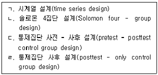
- ㄱ, ㄴ
- ㄱ, ㄷ
- ㄴ, ㄷ
- ㄷ, ㄹ
- ㄴ, ㄷ, ㄹ
(정답률: 알수없음)
30. 구조방정식 모형의 상대적합도 지수(relative fit index)만으로 묶인 것은?
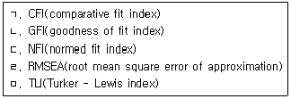
- ㄱ, ㄴ, ㄹ
- ㄱ, ㄴ, ㅁ
- ㄱ, ㄷ, ㅁ
- ㄴ, ㄷ, ㄹ
- ㄷ, ㄹ, ㅁ
(정답률: 알수없음)
31. 양적연구 논문의 작성에 관한 설명으로 옳은 것은?
- 선행연구 결과를 인용할 때 출처는 편의에 따라 생략한다.
- 연구의 완결성을 위해 연구의 제한점은 기술하지 않는다.
- 연구가설과 연구모형은 반드시 함께 제시되어야 한다.
- 연구가설의 지지여부는 실증분석 결과를 통해 제시된다.
- 결론에는 연구방법을 상세히 기술해야 한다.
(정답률: 알수없음)
32. 유사실험설계(quasi - experimental design)에 관한 설명으로 옳지 않은 것은?
- 피험자를 무선할당한다.
- 진실험설계(true experimental design)에 비해 외생변수의 효과를 통제하기 어렵다.
- 실험실 상황이 아닌 실제 상황에서 독립변수를 조작해 연구하는 설계이다.
- 진실험설계에 비해 내적타당도 확보가 어렵다.
- 비동질통제집단설계(nonequivalent control group design)가 유사실험설계에 속한다.
(정답률: 알수없음)
33. 연구자가 연구참여자에 대하여 지켜야 할 연구윤리로 옳지 않은 것은?
- 연구기간 중 획득한 정보를 비밀로 유지한다.
- 미성년자인 고등학생을 대상으로 연구할 때 보호자의 동의로 본인 동의를 대신한다.
- 연구기간 중 연구참여를 철회할 권리가 있음을 알린다.
- 연구의 목적, 예상되는 기간 및 절차를 알린다.
- 연구참여에 따른 잠재적 위험에 대해 알린다.
(정답률: 알수없음)
34. 다음 실험설계 중 집단 내 설계만으로 묶인 것은?
- 솔로몬 4집단 설계, 교차 설계
- 요인 설계, 라틴정방형(Latin square) 설계
- 교차 설계, 요인 설계
- 교차 설계, 라틴정방형(Latin square) 설계
- 요인 설계, 솔로몬 4집단 설계
(정답률: 알수없음)
35. F-분포에 관한 설명으로 옳지 않은 것은?
- F-분포를 따르는 확률변수는 항상 양(+)의 값을 갖는다.
- 분포의 모양이 자유도에 따라 달라진다.
- 분포의 모양이 항상 좌우대칭이다.
- 자유도가 커지면 정규분포에 근접한다.
- 두 개 표본분산이 사용되기 때문에 두 개 표본의 자유도가 있다.
(정답률: 알수없음)
36. 다음 내용이 모두 해당되는 연구방법은?
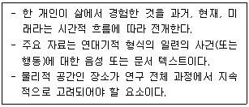
- 코호트연구
- 패널연구
- 내러티브연구
- 근거이론연구
- 구조방정식모형
(정답률: 알수없음)
37. 다음 중 연구의 패러다임이 다른 것은?
- 연구 결과를 일반화시키지 않음
- 비구조화된 질적 자료의 수집
- 현상학(phenomenology)적 인식론
- 특정 현상에 대한 해석이나 의미의 차이 이해
- 대표성을 갖는 크기가 큰 표본의 활용
(정답률: 알수없음)
38. 척도에 관한 설명으로 옳지 않은 것은?
- 섭씨 온도는 등간(interval) 척도의 예이다.
- 20℃는 10℃보다 두 배 뜨겁다고 할 수 있다.
- 비율(ratio) 척도는 절대 영점을 가지고 있다.
- 하나의 특성을 여러 가지 척도로 측정할 수 있다.
- 등간(interval) 척도와 비율(ratio) 척도로 측정된 변수들은 모두 회귀분석의 종속변수로 사용할 수 있다.
(정답률: 알수없음)
39. 가설에 관한 설명으로 옳은 것을 모두 고른 것은?
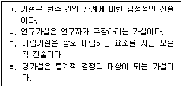
- ㄱ, ㄷ
- ㄴ, ㄹ
- ㄱ, ㄴ, ㄹ
- ㄱ, ㄷ, ㄹ
- ㄴ, ㄷ, ㄹ
(정답률: 알수없음)
40. 표집 방법과 그 방법이 속한 유형이 바르게 연결된 것은?
- 할당(quota) 표집 - 확률 표집
- 군집(cluster) 표집 - 비확률 표집
- 편의(convenience) 표집 - 확률 표집
- 판단(judgement) 표집 - 비확률 표집
- 층화(stratified) 표집 - 비확률 표집
(정답률: 알수없음)
41. 사후비교검정 방법으로 바르게 묶인 것은?
- Tukey 검정, Kolmogorov 검정
- Scheffé 검정, Box의 M 검정
- Tukey 검정, Scheffé 검정
- Kolmogorov 검정, Scheffé 검정
- Box의 M 검정, Duncan 검정
(정답률: 알수없음)
42. 다음 분산분석(ANOVA) 결과에 관한 설명으로 옳지 않은 것은?
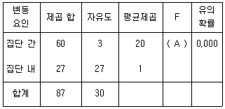
- A는 20이다.
- 영가설은 H0 : μ1 = μ2 = μ3 이다.
- 분석에 사용된 사례의 수는 31개이다.
- 분석에 사용된 집단의 수는 4개이다.
- 분석결과, 유의수준 0.⑤에서 영가설은 기각한다.
(정답률: 알수없음)
43. 과학적 연구의 특성으로 옳지 않은 것은?
- 객관성을 추구하여야 한다.
- 타당한 근거를 통해 결론에 대한 증거자료를 확보해야 한다.
- 조건과 과정이 같으면 동일한 결론을 얻어야 한다.
- 기존에 확립된 이론은 수정되지 않아야 한다.
- 자료는 합리적이고 체계적인 방법을 통해 수집한 것이어야 한다.
(정답률: 알수없음)
44. 다음 값들 중에서 모집단의 평균을 추정하기 위한 표본의 크기를 계산할 때 필요한 값을 모두 고른 것은?
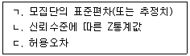
- ㄱ
- ㄱ, ㄴ
- ㄱ, ㄷ
- ㄴ, ㄷ
- ㄱ, ㄴ, ㄷ
(정답률: 알수없음)
45. 단순선형회귀분석에서 선형관계로 설명되지 않는 변동(SSE; sum of squares error)이 총 변동(SST; sum of squares total)에서 차지하는 비중이 1/4 이라면 결정계수 R2의 값은?
- 1/16
- 1/4
- 7/16
- 9/16
- 3/4
(정답률: 알수없음)
46. 가설 검정에 관한 설명으로 옳지 않은 것은?
- 1종 오류는 영가설이 참임에도 불구하고 이를 기각하는 오류이다.
- 2종 오류는 영가설이 거짓임에도 불구하고 이를 채택하는 오류이다.
- 일반적으로 1종 오류보다 2종 오류를 더 심각한 오류로 간주한다.
- 영가설이 참이 아닐 때 이를 기각함으로써 올바른 결정을 내릴 가능성의 정도를 통계적 검정력이라고 한다.
- 일반적으로 1종 오류의 확률이 작아질수록 2종 오류의 확률은 커지고 통계적 검정력은 작아진다.
(정답률: 알수없음)
47. 구성개념(construct) 타당도에 해당하는 것들로 바르게 묶인 것은?
- 내용(content) 타당도, 예측(predictive) 타당도
- 수렴(convergent) 타당도, 동시(concurrent) 타당도
- 예측(predictive) 타당도, 판별(discriminant) 타당도
- 동시(concurrent) 타당도, 내용(content) 타당도
- 수렴(convergent) 타당도, 판별(discriminant) 타당도
(정답률: 알수없음)
48. Cronbach의 α계수는 다음 중 어떤 종류의 신뢰도를 평가하는 것인가?
- 문항 내적일관성(internal consistency) 신뢰도
- 재검사(test - retest) 신뢰도
- 동형 검사(parallel form) 신뢰도
- 반분(split - half) 신뢰도
- 유사 검사(alternate form) 신뢰도
(정답률: 알수없음)
49. 실험 설계에서 내적타당도를 저해하는 요인에 해당하지 않는 것은?
- 역사적 사건(history)
- 성숙효과(maturation)
- 주 효과(main effect)
- 선발 편향(selection bias)
- 통계적 회귀(statistical regression)
(정답률: 알수없음)
50. 관찰 시점이 관찰 대상의 행동이 일어나는 시점과 일치하는지 여부를 기준으로 관찰법을 분류한 것은?
- 자연적(natural setting) 관찰과 인위적(contrived setting) 관찰
- 공개적(undisguised) 관찰과 비공개적(disguised) 관찰
- 체계적(structured) 관찰과 비체계적(unstructured) 관찰
- 직접(direct) 관찰과 간접(indirect) 관찰
- 인적(human) 관찰과 기계적(mechanical) 관찰
(정답률: 알수없음)
3과목: 심리측정 평가의 활용
51. 심리적 속성에 수를 부여하는 것을 ( ㄱ ), 수를 부여하여 얻어낸 결과를 해석하는 것을 ( ㄴ )(이)라고 한다. ( )에 들어갈 내용으로 옳은 것은?
- ㄱ: 심리검사, ㄴ: 심리측정
- ㄱ: 심리검사, ㄴ: 심리평가
- ㄱ: 심리측정, ㄴ: 심리검사
- ㄱ: 심리측정, ㄴ: 심리평가
- ㄱ: 심리평가, ㄴ: 심리검사
(정답률: 알수없음)
52. 심리검사와 그 특징을 옳게 짝지은 것은?
- 우드워스(Woodworth)의 개인자료기록지(Personal Data Sheet): 최초로 타당도 척도 사용
- 비네-시몽(Binet-Simon)검사: 최초의 아동집단지능검사
- 로샤(Rorschach)검사: 최초로 잉크반점의 유용성 제안
- 군대베타(Army-beta)검사: 최초 개발된 비언어성 지능검사
- TAT: 최초 제작된 투사적 검사
(정답률: 알수없음)
53. SCID(Structured Clinical Interview for DSM)에 관한 설명으로 옳은 것은?
- 행동관찰을 위한 기록법 가운데 하나이다.
- DSM-5에 맞게 SCID-5-I과 SCID-5-II가 제작되었다.
- 최근 일주일을 기준으로 증상경험에 초점을 맞추어 기록한다.
- 평가 대상의 전집과 평가 맥락에 맞게 내용을 조정할 수 있도록 융통성이 허용된다.
- DSM에 제시된 조현병과 정동장애의 증상을 확인하도록 특화되어 있다.
(정답률: 알수없음)
54. 비구조화된 평가 면담에 관한 설명으로 옳지 않은 것은?
- 구조화된 면담에 비해 평정자간 일치도를 산출하기 더 어렵다.
- 풍부한 정보를 얻기 위해 목표를 정하지 않고 진행한다.
- 자기보고식 심리검사에 비해 타당도가 더 낮다.
- 수검자의 개인력에 관한 독특한 세부사항을 수집하는 데 도움이 된다.
- 수검자로부터 수집한 자료를 수량화하기 어렵다.
(정답률: 알수없음)
55. 행동평가에 관한 설명으로 옳은 것을 모두 고른 것은?
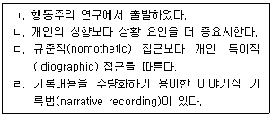
- ㄱ, ㄴ, ㄷ
- ㄱ, ㄴ, ㄹ
- ㄱ, ㄷ, ㄹ
- ㄴ, ㄷ, ㄹ
- ㄱ, ㄴ, ㄷ, ㄹ
(정답률: 알수없음)
56. 객관적 검사와 비교하여 투사적 검사가 지니는 단점으로 옳지 않은 것은?
- 검사자간 채점 결과의 일치도가 더 낮다.
- 수검자가 반응을 왜곡하기 더 쉽다.
- 채점 과정에서 검사자의 주관이 더 개입된다.
- 신뢰도와 타당도를 검증하기 더 어렵다.
- 상황적 요인에 의해 수검자의 반응이 더 영향 받는다.
(정답률: 알수없음)
57. 상위권의 성적을 유지하던 18세 고등학생이 최근 성적 저하 후 심리적 어려움을 호소하여 심리검사를 실시하고자 한다. 파악하려는 문제와 그에 적합한 검사가 잘못 짝지어진 것은?
- 우울: MMPI-A
- 불안: PAI
- 인지 기능: TCI
- 학교적응 문제: MMPI-A
- 자아강도: HTP검사
(정답률: 알수없음)
58. 최대수행검사에 관한 설명으로 옳은 것을 모두 고른 것은?
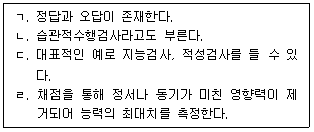
- ㄱ, ㄷ
- ㄱ, ㄹ
- ㄴ, ㄷ
- ㄴ, ㄹ
- ㄷ, ㄹ
(정답률: 알수없음)
59. 지능검사 제작 후 시간이 지남에 따라 산출되는 지능지수가 장기적이며 점진적으로 상승하는 현상은?
- 플린(Flynn) 효과
- 중앙집중화경향
- 평균으로의 회귀 현상
- 연습 효과
- 게스탈트(Gestalt) 효과
(정답률: 알수없음)
60. 관찰되는 원점수가 정규분포를 이루며 이 점수들의 평균은 8.0, 표준편차가 2.0이다. 이때 원점수 6.0점을 표준점수 T점수와 백분위로 변환하여 순서대로 옳게 나열한 것은?
- 35, 16
- 35, 34
- 35, 85
- 40, 16
- 40, 34
(정답률: 알수없음)
61. 적성검사 총점과 학교성적 간 상관관계가 피어슨(Pearson) 상관계수 r = .56이고, p = .03 이라 기술되어 있다. 이에 관한 해석과 그 근거가 옳은 것은?
- r값이 1보다 작으므로, 총점이 높을수록 학교성적이 저조하다.
- r = .56이므로, 총점은 학교성적의 56 %를 설명한다.
- p = .03이므로, α = .⑤ 기준에서 상관계수가 통계적으로 유의하다.
- r값이 0보다 크므로, α = .01 기준에서 상관계수가 통계적으로 유의하다.
- p가 .⑤보다 작으므로, 상관계수가 통계적으로 유의하지 않다.
(정답률: 알수없음)
62. 심리검사에서 '측정의 표준오차(SEM) 값이 클수록'이 의미하는 바를 잘못 기술한 것은?
- 진점수의 신뢰구간은 좁아지고 측정의 정확도가 낮아진다.
- 검사의 신뢰도가 낮아진다.
- 0을 중심으로 오차점수들이 더 멀리 떨어져 있다.
- 검사로 수집된 관찰점수들이 진점수를 중심으로 더 멀리 떨어져 있다.
- 검사를 반복시행할 때 동일한 값을 얻을 가능성이 낮아진다.
(정답률: 알수없음)
63. K-WAIS-IV에서 과정 점수가 제공되는 소검사는?
- 산수
- 행렬추론
- 동형찾기
- 토막짜기
- 빠진곳찾기
(정답률: 알수없음)
64. K-WISC-IV에서 기호쓰기 소검사가 측정하는 능력을 모두 고른 것은?
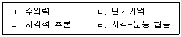
- ㄱ, ㄴ, ㄷ
- ㄱ, ㄴ, ㄹ
- ㄱ, ㄷ, ㄹ
- ㄴ, ㄷ, ㄹ
- ㄱ, ㄴ, ㄷ, ㄹ
(정답률: 알수없음)
65. 다음의 지능지수 산출 방법을 고안한 학자는?
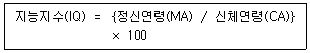
- 비네(A. Binet)
- 터만(L. Terman)
- 여키스(R. Yerkes)
- 웩슬러(D. Wechsler)
- 스피어만(C. Spearman)
(정답률: 알수없음)
66. MMPI-2의 VRIN 척도 점수가 상승할 수 있는 경우를 모두 고른 것은?
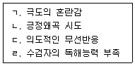
- ㄱ, ㄴ, ㄷ
- ㄱ, ㄴ, ㄹ
- ㄱ, ㄷ, ㄹ
- ㄴ, ㄷ, ㄹ
- ㄱ, ㄴ, ㄷ, ㄹ
(정답률: 알수없음)
67. 다음의 특성들을 모두 포함하는 MMPI-2의 해리스-링고스(Harris-Lingoes) 소척도는?
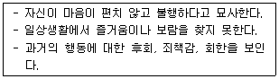
- Pd4(사회적 소외)
- Pd5(내적 소외)
- Sc1(사회적 소외)
- Sc2(정서적 소외)
- Si3(내적/외적 소외)
(정답률: 알수없음)
68. 다음에 해당하는 MMPI-2의 상승 척도 쌍은?
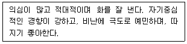
- 2-7
- 3-4
- 4-6
- 7-8
- 8-9
(정답률: 알수없음)
69. 다음의 특성을 반영하는 NEO-PI-R의 요인은?
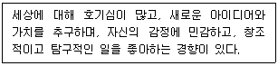
- 신경증(Neuroticism)
- 외향성(Extraversion)
- 개방성(Openness)
- 친화성(Agreeableness)
- 성실성(Conscientiousness)
(정답률: 알수없음)
70. PAI의 치료 척도에 해당하는 것은?
- 공격성(AGG)
- 비일관성(ICN)
- 알코올 문제(ALC)
- 부정적 인상(NIM)
- 반사회적 특징(ANT)
(정답률: 알수없음)
71. 다음에 해당하는 로샤(Rorschach) 검사 발달질 채점 기호는?
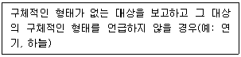
- +
- o
- v/+
- v
- -
(정답률: 알수없음)
72. 로샤(Rorschach) 검사에서 평범반응에 관한 설명으로 옳은 것은?
- 'R' 로 기호화한다.
- 이 반응의 총합을 사용하여 X-%값을 계산한다.
- 로샤 카드마다 1개씩의 평범반응이 정해져 있다.
- 이 반응의 총합이 일정 수준 이상으로 높으면 환각 경험 가능성을 의심한다.
- 수검자의 반응이 평범반응과 같은 내용이더라도 사용한 영역이 정해진 평범반응의 영역과 동일할 때 인정된다.
(정답률: 알수없음)
73. 삭스(J. Sacks)의 문장완성검사에서 대표적으로 평가하는 4가지 영역이 아닌 것은?
- 성
- 가족
- 정서
- 자기개념
- 대인관계
(정답률: 알수없음)
74. 22세의 A는 인물화검사에서 내장 기관이 드러난 사람을 그렸다. 다음 중 일차적으로 고려해야 하는 문제는?
- 우유부단함
- 낮은 에너지 수준
- 현실 검증의 어려움
- 관심에 대한 강한 욕구
- 대인관계에 대한 불편감
(정답률: 알수없음)
75. TAT 해석 시 머레이(H. Murray)의 욕구-압력 분석법에서 사용하는 기본 요인이 아닌것은?
- 주인공
- 주인공의 욕구
- 환경 자극의 요구와 압력
- 주인공의 행동 표현 방식
- 주인공이 느끼는 불안의 본질
(정답률: 알수없음)
4과목: 이상심리
76. 아편유사제(Opioids)에 해당되는 물질은?
- 코카인(Cocaine)
- 헤로인(Heroin)
- 엘에스디(LSD)
- 암페타민(Amphetamine)
- 마리화나(Marijuana)
(정답률: 알수없음)
77. 이상행동의 분류와 평가의 장점에 관한 설명으로 옳은 것을 모두 고른 것은?
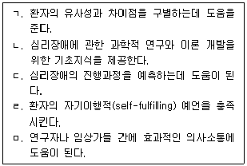
- ㄱ, ㄴ, ㄹ
- ㄱ, ㄷ, ㅁ
- ㄱ, ㄴ, ㄷ, ㅁ
- ㄴ, ㄷ, ㄹ, ㅁ
- ㄱ, ㄴ, ㄷ, ㄹ, ㅁ
(정답률: 알수없음)
78. 행동주의적 접근에 관한 설명으로 옳은 것은?
- 고전적 조건형성을 주장한 학자는 반두라(A. Bandura)이다.
- 이상행동은 주로 고전적 조건형성, 조작적 조건형성, 사회적 모델링의 3가지 학습원리로 설명된다.
- 체계적 둔감법은 뱀공포증 환자의 경우 치료 시작부터 하루종일 뱀을 목에 감고 생활하도록 하는 기법이다.
- 무의식적 욕구를 변화시키는 것이 치료의 주된 목표이다.
- 아동이 엄마의 심부름을 한 뒤 칭찬을 받는 것은 부적 강화이다.
(정답률: 알수없음)
79. DSM-5의 품행장애 진단기준에 해당되지 않는 것은?
- 다른 사람을 자주 괴롭히거나 위협한다.
- 술을 자주 마신다.
- 다른 사람에게 성적 활동을 강요한다.
- 13세 이전부터 무단결석을 자주 한다.
- 동물에게 신체적으로 잔인하게 대한다.
(정답률: 알수없음)
80. 이상행동의 분류와 평가에 관한 설명으로 옳지 않은 것은?
- DSM-5에서 다축체계를 폐기하였다.
- 정신상태검사에서 환자의 외모와 외현적 행동도 평가한다.
- 적절한 평가방법과 절차를 계획하기 전에 평가목적을 명료화한다.
- 수업시간에 교사가 아동의 산만한 행동을 평가하는 것은 자연주의적 행동관찰법이다.
- DSM-5에서는 아동ㆍ청소년기에 처음 진단되는 장애를 독립적으로 제시하였다.
(정답률: 알수없음)
81. 프로이드(S. Freud)의 정신분석이론에 관한 설명으로 옳은 것은?
- 발달단계는 대인관계 욕구에 따라 구분된다.
- 오이디푸스 갈등이 나타나는 발달단계는 남근기이다.
- 인간의 행동은 우연히 일어난다.
- 역전이분석은 내담자가 치료과정에서 상담자에게 나타내는 전이현상을 분석하는 것이다.
- 이상행동은 초기 아동기의 의식적 갈등에 의한 것이다.
(정답률: 알수없음)
82. DSM-5의 소아기호증(소아성애장애)에 관한 설명 및 진단기준으로 옳은 것을 모두 고른 것은?
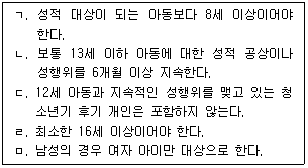
- ㄱ, ㄴ
- ㄱ, ㄷ, ㅁ
- ㄴ, ㄷ, ㄹ
- ㄴ, ㄹ, ㅁ
- ㄱ, ㄴ, ㄷ, ㄹ
(정답률: 알수없음)
83. DSM-5의 성격장애와 주요 특징의 연결이 옳은 것은?
- 자기애성 성격장애 - 자신에 대한 과장된 평가와 특권의식
- 의존적 성격장애 - 정체감 혼란과 버림받음을 피하기 위한 과도한 노력
- 경계선 성격장애 - 타인의 충고와 지지없이는 일상적 결정을 하기가 어려움
- 조현성 성격장애 - 사회적 상황에서 비난당하거나 거부당할지 모른다는 생각에 사로잡힘
- 강박성 성격장애 - 타인의 애정과 관심을 끌기 위한 과도한 노력
(정답률: 알수없음)
84. DSM-5의 강박 및 관련장애에 해당되는 것은?
- 범불안장애
- 노출장애
- 유뇨증
- 병적 방화(방화광)
- 신체변형(이형)장애
(정답률: 알수없음)
85. DSM-5의 신경발달장애에 해당하지 않은 것은?
- 틱장애
- 지적장애
- 말소리장애
- 특정학습장애
- 선택적 함구증
(정답률: 알수없음)
86. 다음 사례에 적절한 DSM-5의 진단명은?
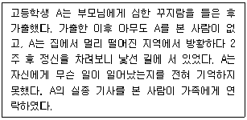
- 전환장애
- 공황장애
- 인위성장애
- 해리성 기억상실
- 해리성 정체감장애
(정답률: 알수없음)
87. DSM-5의 공황발작의 진단기준 증상에 해당되지 않는 것은?
- 환각
- 발한
- 감각이상
- 죽을 것 같은 두려움
- 한기나 열감을 느낌
(정답률: 알수없음)
88. DSM-5의 급식 및 섭식장애에 관한 설명으로 옳은 것은?
- 신경성 폭식증은 여성보다 남성에서 더 흔하다.
- 이식증은 되새김장애의 진단이 있으면 추가 진단될 수 없다.
- 12개월 된 영아가 종이, 천, 머리카락 등을 반복해서 먹을 경우 이식증으로 진단된다.
- 되새김장애는 청소년기에도 발병할 수 있다.
- 신경성 식욕부진증에서는 부적절한 보상행동이 나타나지 않는다.
(정답률: 알수없음)
89. DSM-5의 주요우울장애에 관한 설명으로 옳은 것은?
- 주요우울장애 삽화는 1개월 이상 연속으로 지속되어야 한다.
- 한 번 치료되면 그 이후 재발되지 않는다.
- 어떤 연령대에서도 발병할 수 있지만, 아동기에 비해 청소년기에 발병가능성이 높아진다.
- 조증삽화 또는 경조증삽화가 존재한 적이 있다.
- 청소년기와 성인기에 남성의 유병율이 여성보다 높다.
(정답률: 알수없음)
90. DSM-5의 주의력결핍 과잉행동장애에 관한 설명으로 옳지 않은 것은?
- 여성은 남성에 비해 주로 부주의 증상을 보인다.
- 리탈린(Ritalin)과 같은 중추신경계자극제가 치료약물로 사용된다.
- 몇가지 부주의 또는 과잉행동-충동성 증상은 12세 이전에 나타난다.
- 교사의 질문이 끝나기 전에 성급하게 대답하는 것은 부주의 증상이다.
- 부주의, 충동성, 계획성 부족은 성인기까지 지속되는 경향이 있다.
(정답률: 알수없음)
91. DSM-5의 불면장애에 관한 설명으로 옳은 것을 모두 고른 것은?
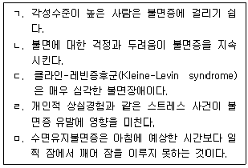
- ㄱ, ㄴ
- ㄴ, ㄷ
- ㄱ, ㄴ, ㄹ
- ㄴ, ㄷ, ㄹ, ㅁ
- ㄱ, ㄴ, ㄷ, ㄹ, ㅁ
(정답률: 알수없음)
92. DSM-5의 반응성 애착장애에 관한 설명 및 진단기준으로 옳지 않은 것은?
- 불안장애의 하위유형이다.
- 아동의 발달 연령이 9개월 이상이어야 한다.
- 진단기준이 자폐스펙트럼장애를 만족하지 않는다.
- 진단되려면 장애가 5세 이전에 나타나야 한다.
- 성인 양육자에 대해 정서적으로 억제되고 위축된 행동을 나타낸다.
(정답률: 알수없음)
93. DSM-5의 조현병 스펙트럼장애에 관한 설명으로 옳지 않은 것은?
- 와해된 언어는 양성증상이다.
- 조현형 성격장애는 조현병 스펙트럼장애로 분류된다.
- 조현정동장애는 주요 기분(주요우울 또는 조증)삽화 없이 존재하는 2주 이상의 망상이나 환각이 있다.
- 단기 정신병적 장애의 심각도는 지난 7일중 정신병의 일차 증상 각각에 대하여 가장 심한 정도를 5점 척도로 평가한다.
- 망상장애의 가장 흔한 아형은 질투형이다.
(정답률: 알수없음)
94. DSM-5의 불안장애에 관한 설명으로 옳은 것을 모두 고른 것은?
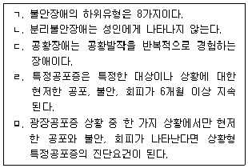
- ㄱ, ㄴ
- ㄴ, ㅁ
- ㄷ, ㄹ
- ㄷ, ㄹ, ㅁ
- ㄱ, ㄷ, ㄹ, ㅁ
(정답률: 알수없음)
95. 신경인지영역과 평가과제의 예가 옳게 연결된 것은?
- 인지적 유연성 - 음악을 들으면서 계산 문제 풀기
- 지속적 주의 - 일정한 시간 동안 특정 신호가 들릴 때마다 버튼 누르기
- 분할 주의 - 물건을 크기에 따라 분류하다가 색상에 따라 분류하기
- 작업 기억 - 구멍뚫린 보드에 못을 빨리 끼워 넣기
- 감정의 인식 - 'ㅎ'으로 시작되는 단어 말하기
(정답률: 알수없음)
96. DSM-5의 질병불안장애에 관한 설명 및 진단기준으로 옳지 않은 것은?
- 건강(질병)에 대한 몰두가 3개월 이상 지속되어야 한다.
- 심각한 질병에 걸려 있거나 걸리는 것에 대해 몰두한다.
- 유병률은 남성과 여성이 비슷하다.
- 의학적 진료추구형과 진료회피형으로 세분된다.
- 의학적 상태가 나타나도 질병에 대한 몰두가 과도하거나 부적절하다.
(정답률: 알수없음)
97. DSM-5에서 임상적 주의가 필요한 가족양육 관련 문제에 해당하는 것을 모두 고른 것은?
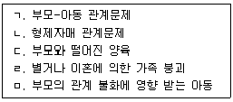
- ㄴ, ㄹ
- ㄱ, ㄴ, ㄷ
- ㄱ, ㄴ, ㄷ, ㅁ
- ㄱ, ㄷ, ㄹ, ㅁ
- ㄱ, ㄴ, ㄷ, ㄹ, ㅁ
(정답률: 알수없음)
98. 다음 사례에 적절한 진단명은?
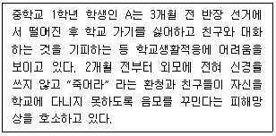
- 적응장애
- 단기 정신병적 장애
- 외상후 스트레스장애
- 조현양상장애
- 조현병
(정답률: 알수없음)
99. 다음 사례에 적절한 DSM-5의 진단명은?
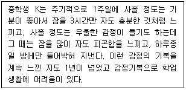
- 순환성장애
- 제1형 양극성장애
- 제2형 양극성장애
- 주요우울장애
- 파괴적 기분조절곤란장애
(정답률: 알수없음)
100. A가 겪고 있는 성격장애에 관한 설명으로 옳지 않은 것은?
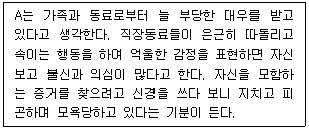
- 사람들이 악의적이고 기만적이라는 신념을 가진다.
- 충분한 근거 없이 타인이 자신을 착취하고 해를 끼친다고 의심한다.
- 치료에서는 상담자가 방어적으로 반응하기보다 솔직하고 일관성 있는 태도로 신뢰감을 주는 것이 중요하다.
- 강한 스트레스를 받으면 짧은 기간 정신병적 삽화를 경험하기도 한다.
- 자신의 증상을 불편해하는 자아이질성을 주로 보인다.
(정답률: 알수없음)